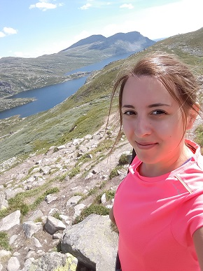
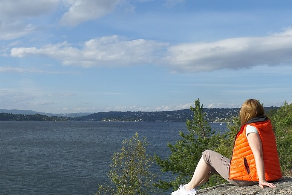

Czemu Norwegia?
Oczywistym jest że w przyrodzie Norwegii można się zakochać. Piękne
fiordy, czysta woda i powietrze, bliskość natury, a zimą zaspy śniegu.
Jednak oprócz tych licznych rzeczy mi odpowiada też norweskie
podejście do życia. Norwedzy są uśmiechnięci i serdeczni, cenią sobie
aktywność na świeżym powietrzu, mam wrażenie że nie przejmują sie
pierdołami i bije od nich spokój i taka pozytywna energia. To
oczywiście tylko moje odczucia oparte na ludziach których poznałam,
wiem że na pewno nie wszyscy tacy są.
Mi osobiście podoba się
też skandynawska architektura. I nie mam tu na myśli nowych biurowców
w Oslo (chociaż te też lubię) lecz najbardziej domki jednorodzinne. I
te stare i nowe mają swój urok. Zachwalając ten kraj nie można też
zapomnieć o białych nocach! Nawet w Oslo które jest na południu, dzień
jest dłuższy niż w Warszawie. A na północy - słońce przez kilka
miesięcy nie chowa się za horyzont! Nie doświadczyłam jeszcze białych
nocy i nie udało mi się zobaczyć zorzy polarnej ale myślę że jeszcze
wszystko przede mną...
Zdjęcia!
 